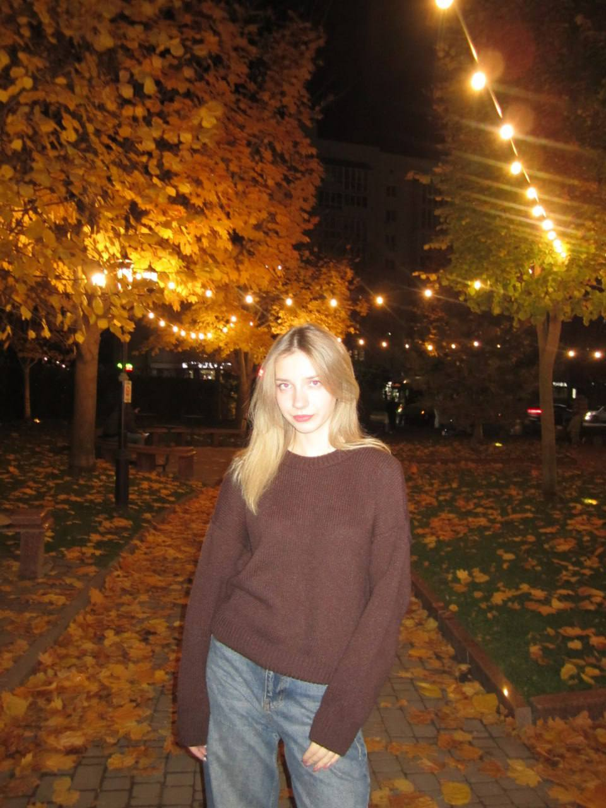

Студентка.
Саморозвиток.
Майбутнє.
Я навчаюся, розвиваюся та крок за кроком формую власний шлях у професійному житті.

Я навчаюся, розвиваюся та крок за кроком формую власний шлях у професійному житті.
Мене звати Бондаренко Олександра Олегівна. Мені 18 років. Я є студенткою Донецького національного університету імені Василя Стуса, де здобуваю вищу освіту.
Родом я з Чернівецької області, міста Новодністровськ. Наразі навчаюся та прагну професійного розвитку, поглиблюючи свої знання й навички для майбутньої самореалізації.
